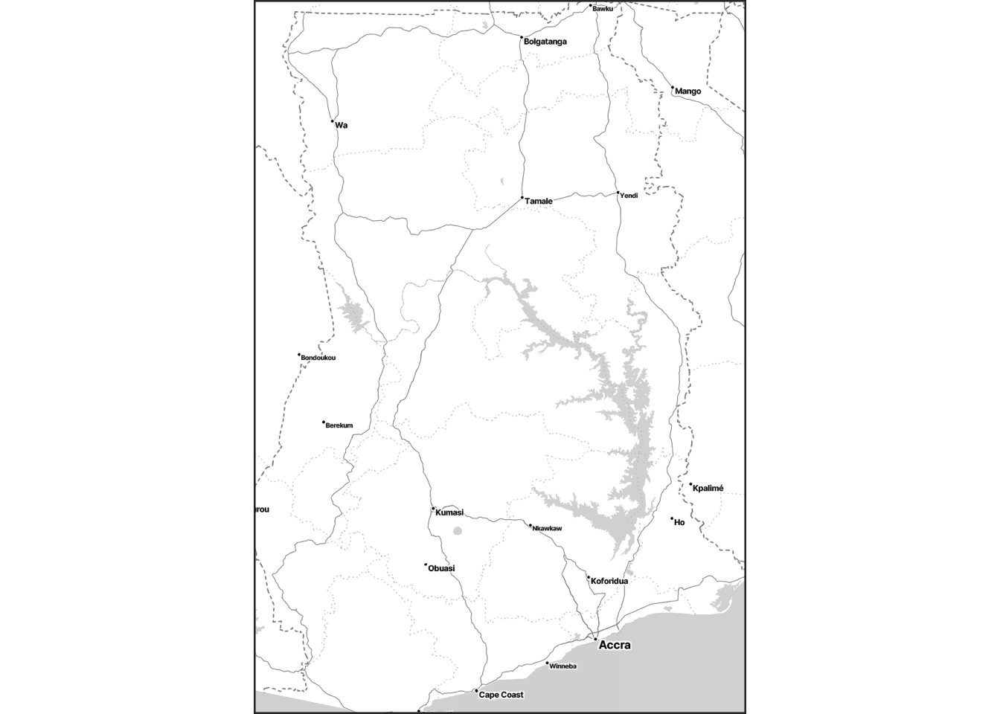
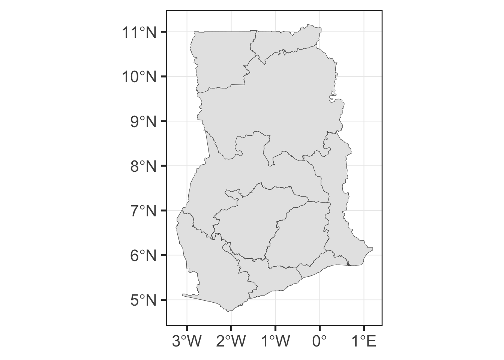
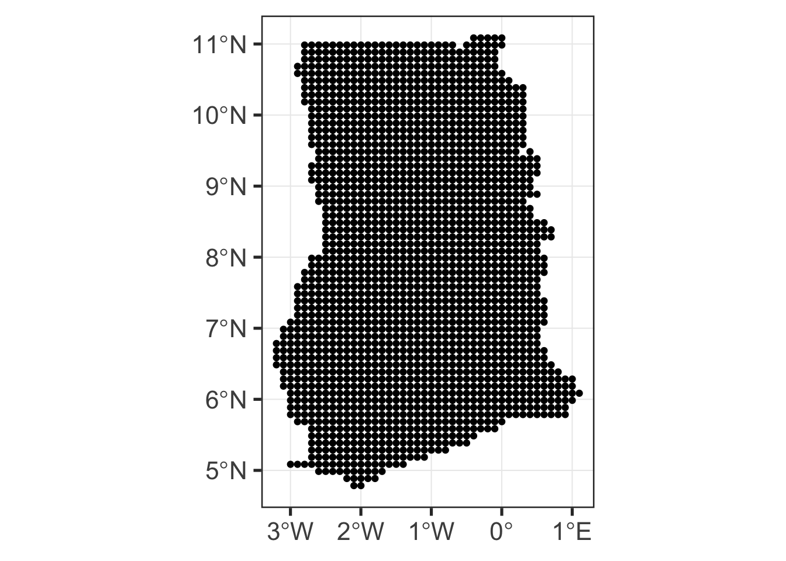
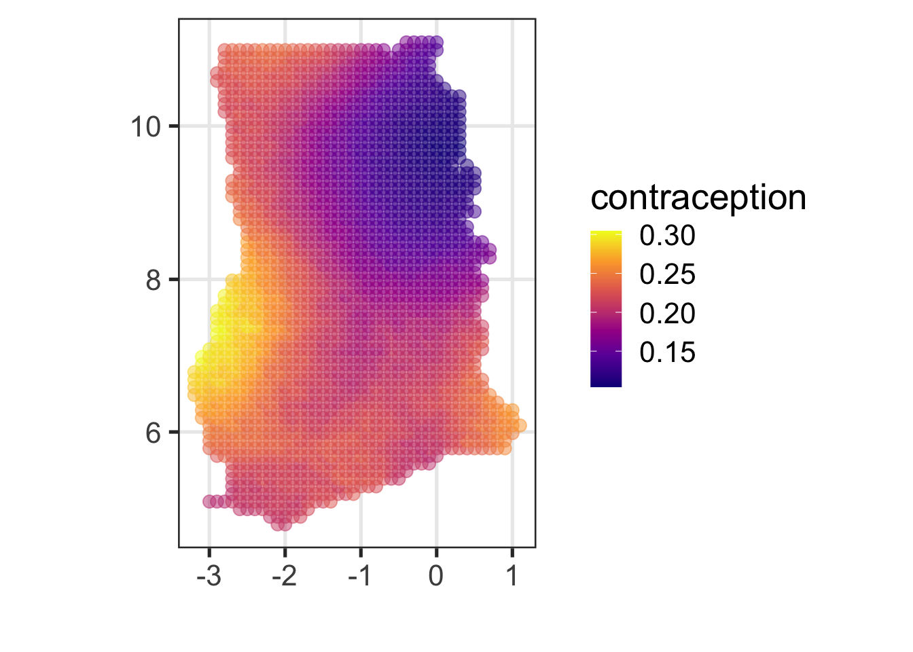
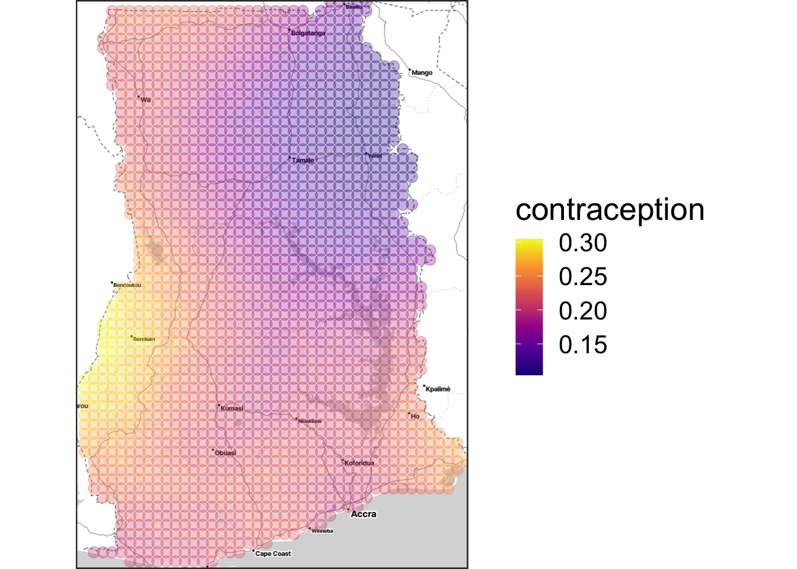

Ghana Unit Level Modeling Document
Preamble
R packages
The required R packages are explicitly listed here.
library(raster)
library(forcats)
library(ggmap)
library(lme4)
library(nlme)
library(pander)
library(haven)
library(knitr)
library(fields)
library(rgdal)
library(sf)
library(randomForest)
library(tidyverse)Introduction
Introduction
To meet the high demand on the geographic dis-aggregation of key indicators, UNFPA Small Area Estimation (SAE) work has initially focused on the combination of census data and survey data. But to be rigorously valid, one necessary condition is that both the survey and the census should be carried out at the same moment so that the distributions of the variables from the survey converge toward their census counterpart. But in the real world, the census is generally “old” and the survey data contemporaneous. In this more frequent situation, the method suffers from different biases that have been pointed out by numerous authors (Tarozzi & Deaton, 2009; Molina & Rao 2010; Nguyen, 2012). So a new SAE approach needs to be developed for the countries without recent census data available. This document describes a method that fills this gap by relying only on the survey Data and borrowing strength from the spatial correlation within the sample.
This document describes the detailed steps for unit level model small area estimation. Each step is accompanied with the associated R code, followed by the detailed description for the code. The Ghana DHS data is taken as the example.
unsae package
Modeling requires an R package called
unsaeavailable on here.The development of
unsaepackage has been complete, yet documentation may not be fully provided.To install
unsae, run the following code:
devtools::install_github("ydhwang/unsae")Then it can be loaded by running:
library(unsae)- In case the software returns that it could when seeing the
could not find functionerror messages or something similar, it means the package may have been updated. So you need to run thedevtools::install_github("ydhwang/unsae")again
Data preparation
Description
- This section illustrates the data preparation steps for the unit level model.
- Throughout, we assume that the data files are stored in
../data/(locations are all relative). - Alternatively, one can use
file.choose()and locate the file manually.
DHS Data loading
- Detailed description of DHS data can be found at DHS site.
- DHS data files are assumed to be stored in
../data/2011 DHS/. - For Ghana case,
GHHR72FL.SAV: individual dataGHIR72FL.SAV: Household data
- We use
haven::read_savfunction to read the data files stored inSAVformat.
Individual level data handling
- Artifact of converting SPSS
SAVfile to “flattened” data table form can be removed by choosing the variables that don’t have “$” in their names. - They are excluded from the analysis. In the code, it looks for
$string and excludes them from the data set.
Multiple occurrence variables are placed one after the other by occurrence; all variables for occurrence 1 precede all variables for occurrence 2 and so on; multiple occurrence variables have a numeric sub- index that indicate the occurrence number.
Selection of the variables (1)
- Some information can be difficult to use, so removed from the analysis.
V003is the Respondent’s line number in the household schedule, so removed from the analysis.
indiv_ini <- read_sav("sae-geospatial/data/2011 DHS/GHIR72FL.SAV")
indiv <- indiv_ini %>% select(!matches("[\\$]")) %>%
select(-V000) %>% # same country
select(-V003) Selection of the variables (2)
indiv <- indiv %>% select_if(function(x) mean(is.na(x)) < 0.3)- For the purpose of SAE, the variables with too high missing rate are not useful. Hence we exclude those with less than 30 % missing.
- We can see that 4079 columns are reduced to 405.
- It’s important to notice that in the real world, one should handle the missing variable problem one-by-one.
Glimpse of the data
- We can see the variable information here presented in Table label.
- Only first few are presented here.
info <- lapply(indiv, function(x) attr(x, "label"))
ind_var_tbl <- tibble(COL = names(info), DESC = as.character(info))
ind_var_tbl %>% head %>% pander| COL | DESC |
|---|---|
| CASEID | Case Identification |
| V001 | Cluster number |
| V002 | Household number |
| V004 | Ultimate area unit |
| V005 | Women’s individual sample weight (6 decimals) |
| V006 | Month of interview |
Household level
We first conduct the data cleaning for household data in a similar manner.
household_ini <- read_sav("sae-geospatial/data/2011 DHS/GHHR72FL.SAV")
household <- household_ini %>% select(!matches("[\\$]"))Renaming
household <- household %>%
rename(V000 = HV000, V001 = HV001, V002 = HV002, V003 = HV003, V004 = HV004)The matching key information can be found in HV000,
HV001, HV0002, HV003,
HV004. They are renamed to be used for joining with the
individual data table.
- HV000 Country code and phase
- HV001 Cluster number
- HV002 Household number
- HV003 Respondent’s line number (answering Household questionnaire)
- HV004 Ultimate area unit
Selection of the variables (3)
household <- household %>% select_if(function(x) mean(is.na(x)) < 0.3) %>% select(-V000) %>%
select(-V003) # same countrySame missing rules are applied to select the relevant variables. We can see that 3028 columns are reduced to 142.
Glimpse of the data
Similarly to the individual data, only first few are presented here.
info <- lapply(household, function(x) attr(x, "label"))
house_var_tbl <- tibble(COL = names(info), DESC = as.character(info))
house_var_tbl %>% head %>% pander| COL | DESC |
|---|---|
| HHID | Case Identification |
| V001 | Cluster number |
| V002 | Household number |
| V004 | Ultimate area unit |
| HV005 | Household sample weight (6 decimals) |
| HV006 | Month of interview |
Joining the individual and household data
- We combine the individual data set and household data to create
dhs_expanded. - We join the individual and household data sets by using
V000,V001,V0002,V003,V004as key variables.
dhs_expanded <- left_join(indiv, household, by = c("V001", "V002", "V004")) %>%
arrange(V001)
HV004: Ultimate area unit is a number assigned to each sample point to identify the ultimate area units used in the collection of data. This variable is usually the same as the cluster number, but may be a sequentially numbered variable for samples with a more complicated structure.
Data modification
V218Number of living children; convert it into three categories and rename it asV218RV013: Age in 5-year groups; convert it into three categories and rename it asV013R
V218R
0 1-2 3-4 5 and more
0 1 3 5
V013R
15-24 25-34 35-49
1 2 3 Conversion
The age group variables are re-coded into a fewer categories.
dhs_expanded <- dhs_expanded %>% mutate(V013R =
ifelse(V013 %in% 1:2, 1,
ifelse(V013 %in% 3:4, 2,
ifelse(V013 > 4, 3, V013))))
dhs_expanded <- dhs_expanded %>%
mutate(V218R =
ifelse(V218 == 0, 0, ifelse(V218 == 1|V218 == 2, 1,
ifelse(V218 ==3|V218 ==4, 3,
ifelse(V218 >=5, 5, V218)))))dhs_expanded <- dhs_expanded %>% select_if(function(x) mean(is.na(x)) < 0.9) # remove if more than 10% missingAdditional steps followed to remove columns with too much missing info.
Defining the target variables
- Contraceptive prevalence rate (CPR) - using
V313: combine 1, 2, 3 as “Yes”; 0 as “No. - Modern contraceptive prevalence rate (CPRm) - using
V313: combine 0, 1, 2, 3 as “No”; 3 as “Yes”. - Unmet need for family planning rate (UNR) - using
V626: combining 1, 2 as “Yes” (unmet need for family planning); combining all other answers as “No”.
dhs_reduced <-
dhs_expanded %>%
select(V013R, V106, V218R, V025, V120, V127, V128, V128, V129, V113,
V001, V005, # survey info part
V119,
HV206,
V130,
V116,
V151,
V150,
V626, V313) %>%
mutate(CPR = ifelse(V313 == 0, 0, 1)) %>%
mutate(CPRm = ifelse(V313 == 3, "Yes", "No")) %>%
mutate(UNR = ifelse(V626 == 1|V626 == 2, "Yes", "No")) %>%
select(-V313, -V626)
dhs_reduced <- dhs_reduced %>%
mutate_all(as_factor) %>%
mutate(V218R = ifelse(V218R == "5 and more"|V218R == "3-4",
"3 or more", V218R))
attr(dhs_reduced$V218R, "label") <- attr(dhs_expanded$V218, "label")Quick screeing of key variables
- This step is quickly screen the important variables found based on a machine learning based method.
- The example below shows the case where
V013R, V106, V218R, V025, V120, V127, V128, V128, V129, V113, V119, HV206, V130, V116, V151, V150are used as the candidates, and choose the seemingly important six variables among them. - To see the detail about the metric, see this.
temp_set <- dhs_reduced %>% na.omit
temp_rf <- randomForest(CPR ~ V013R + V106 + V218R + V025 + V120 + V127 + V128 + V128 + V129 + V113 + V119 +
HV206 + V130 + V116 + V151 + V150, data = temp_set)
imp_tbl <- tibble(imp = as.numeric(importance(temp_rf)), key = rownames(importance(temp_rf))) %>% mutate(q = rank(-imp))
selected_06 <- imp_tbl %>% filter(q <= 6) %>% arrange(-imp)
info_v <- lapply(temp_set, function(x) attr(x, "label")) %>% bind_rows %>% gather
left_join(selected_06, info_v, by = "key") %>% select(-imp) %>% pander()| key | q | value |
|---|---|---|
| V113 | 1 | Source of drinking water |
| V130 | 2 | Religion |
| V128 | 3 | Main wall material |
| V116 | 4 | Type of toilet facility |
| V127 | 5 | Main floor material |
| V218R | 6 | Number of living children |
Additional steps to simplify the data (1)
- Many problems are caused when we carry variables with too many categories, where many categories have few counts.
fct_lump_propcombines levels that appear less than 10 % and create a new category named “Other”.
target <- selected_06$key
reduced_tbl <-
temp_set %>%
mutate_if(function(x) n_distinct(x) < 20, as.factor) %>%
mutate_at(all_of(target), function(x) fct_lump_prop(x, 0.1, other_level = "Other")) Additional steps to simplify the data (2)
reduced_tblnow has columns with fewer categories after lumping levels with less than 10% proportion.- As a comparison,
temp_set %>% group_by(V130) %>% tally %>% pander| V130 | n |
|---|---|
| Catholic | 1341 |
| Anglican | 72 |
| Methodist | 547 |
| Presbyterian | 513 |
| Pentecostal/charismatic | 3456 |
| Other Christian | 1239 |
| Islam | 1726 |
| Traditional/spiritualist | 226 |
| No religion | 273 |
| Other | 1 |
reduced_tbl %>% group_by(V130) %>% tally %>% pander| V130 | n |
|---|---|
| Catholic | 1341 |
| Pentecostal/charismatic | 3456 |
| Other Christian | 1239 |
| Islam | 1726 |
| Other | 1632 |
- This “lumping” process improves overall model fitting by removing the (near-) singularity of the model matrix.
- The model selection step is automated in the code below.
Automatic Model fitting
# automation of this needs a carefully examined set of the variables
fe_form <- paste(selected_06$key, collapse = " + ")
full_form <- as.formula(paste("CPR ~ ", fe_form, "+ (1|V001)")) # full model (with all data)
model_out <- glmer(formula = full_form, data = reduced_tbl, family = binomial(link = "logit"))- We use the selected 6 variables from the screening process.
- It automatically writes a formula taking
CPRas our target indicator, and the survey cluster as a random effect. - To see what’s the formula, see the following output of
full_form(“full” formula including fixed effects and random effect).
print(full_form)## CPR ~ V113 + V130 + V128 + V116 + V127 + V218R + (1 | V001)- In this example, is used in
glmer, generalized linear mixed effects model. Users can use this in the later part as a reference.
Spatial data loading
Spatial data preparation
- We are loading the spatial part of DHS data for SAE.
- In this example, we use the geographic information set from DHS webpage.
- It is assumed to be stored in the following location:
country_shp <- st_read("sae-geospatial/data/2011 DHS/Spatial/GHGE71FL/GHGE71FL.shp", quiet = TRUE)Important Notes
- There are some occasions in which cluster coordinate information is missing in survey data.
- It varies with the country, so the user needs to pay attention to the availability and other potential issues.
## handling missing coord
mis_mark <- country_shp %>% filter((LATNUM == 0 & LONGNUM ==0))
country_shp <- country_shp %>% filter(!(LATNUM == 0 & LONGNUM ==0)) %>% filter(!is.na(LATNUM))Map image tiles downloading
bounding_box <- st_bbox(country_shp) %>% as.numeric # getting the bounding box
country_map <- get_stamenmap(bbox = bounding_box, messaging = FALSE, zoom = 8,
maptype = "toner-lite", format = c("png"))
ggmap(country_map, extent = "device") 
- To download the map image tiles, we first need to identify the bounding box of the (country) map.
- Once bounding box is found, the code below uses bounding box information to download the matching part of the image tiles.
country_mapobject will be used as a base layer for plotting in the remaining part.
Model fitting
Description
In this section, we will describe the detail of the model fitting process.
Cluster-wise estimate (naive)
- One may consider a simple counting for each cluster.
- In the
reduced_tbl, DHSCLUST information was stored asV001(see DHS webpage.)
reduced_tbl <- reduced_tbl %>%
rename(DHSCLUST = V001) %>%
mutate(DHSCLUST = as.integer(DHSCLUST))- We group the data set by DHSCLUST, and calculate the statistics for each cluster.
- Depending on the needs, one may calculate the other statistics.
cluster_result <- reduced_tbl %>%
group_by(DHSCLUST) %>%
summarize(Prop_raw = mean(CPRm == "Yes")) To see the first few clusters,
| DHSCLUST | Prop_raw |
|---|---|
| 1 | 0.03704 |
| 2 | 0.1429 |
| 3 | 0 |
| 4 | 0 |
| 5 | 0.1538 |
| 6 | 0.2 |
Removing the clusters with missing coordinates
- We need to remove the clusters with missing coordinates.
- Then we create the table named
coord_infoof the coordinate information associated with the DHS data.
valid_set <- anti_join(reduced_tbl, mis_mark, by = "DHSCLUST")
coord_info <- tibble(DHSCLUST = country_shp$DHSCLUST, lon = country_shp$LONGNUM, lat = country_shp$LATNUM) coord_infois a tibble with three columns –DHSCLUST,lon,lat. This tibble will be used to join the spatial coordinates to the survey data.
valid_set_with_sp <- left_join(valid_set, coord_info, by = "DHSCLUST")
valid_set_with_sp <- valid_set_with_sp %>%
mutate(DHSCLUST = as.factor(DHSCLUST))valid_set_with_spnow has spatial coordinates.
Model fitting
- We first consider the generalized linear mixed effects model without
no spatial consideration, and store it as
mod_lme. - The model, however, has cluster random effect: \[\begin{eqnarray} \eta &=& \mathbf{X} \boldsymbol{\beta} + \mathbf{Z} \mathbf{b},\\ g(\cdot) &=& \textrm{link function},\\ h(\cdot) &=& g^{-1}(\cdot) = \textrm{inverse link function}, \end{eqnarray}\] where \(\mathbf{b}\) is independent cluster random effect term (with a diagonal covariance matrix, cov(\(\mathbf{b} = \sigma_b^2 \mathbf{I}\)).
mod_lme <-
glmer(CPR ~
V218R + V013R + (1 | DHSCLUST),
family = binomial,
data = valid_set_with_sp)Small area model fitting
- Now we can use
multilevel_EM, which gives a spatial model.
spatial_model_fit <-
multilevel_EM(formula = "CPR ~ V218R + V013R + (1 | DHSCLUST)",
data = valid_set_with_sp, coordinates = c("lon", "lat"))## ...EM iteration: 1
## ...EM iteration: 2
## ...EM iteration: 3- It needs three arguments:
formula: (string) formula that followsglmersyntax. It only takes one random effects (cluster).data: name of the data set.coordinates: the name of coordinates within the data. These columns should exist within the data set provided.- It often takes a while, so it prints out the number of EM iteration while it is being calculated.
Notes on multilevel_EM
- Being different from
mod_lmefromglmer,multilevel_EMuses a spatial model for \(\mathbf{b}\); specifically, \[ \mathbf{b} \sim N(\mathbf{0}, \mathbf{C}), \] where
\(\mathbf{b}=(b_1, b_2, \cdots, b_M)'\) and \(\mathbf{C}_n=(C_{ij})\) with \[ C_{ij} = \exp ( - \lambda \left\| \mathbf{s}_i - \mathbf{s}_j \right\|^2 ) + g \delta_{\mathbf{s}_i, \mathbf{s}_j}. \] - For the detail, see the accompanied technical document.
Preparing the admin shape file
raster map
- Unfortunately, there is no unified data source for different countries that handles country boundary files (note: DHS shapefile is the points for the survey locations).
- The example data used in this note is from here.
- Alternative files like this can be used, and yet shape files from other sources are not standardized, so user needs to be careful.
What we will do:
The code below does the following.
- Import the shape file.
- Draw a map plot from the shape file (validation).
- Extract the admin border (level 1); however the levels are not the same across different countries.
- Create the grid over the country bounding box and then choose those overlapping with the country boundary.
- Draw a map plot from the grid (validation).
- Create
grid_coord, with the coordinates assigned to each grid points.
Importing the shape files
- We first import the shapefiles, and then (visually) check the data.
- The shapefile contains the country border (not the small areas).
country_border <- st_read("sae-geospatial/data/shps/sdr_subnational_boundaries.shp", quiet = TRUE)
ggplot(country_border) + geom_sf()
Creating a grid
- Now we create a grid so that we can use as a baseline for inference.
- We first create a coordinates grid as simple
feature then we convert it into a
tibbleso that we can use it withspatial_model_fit. The tibble is namedgrid_coord. - Since we used
lonandlatas the coordinates’ name, we need to renameXandYtolonandlat.
grid <- country_border %>% st_make_grid(cellsize = 0.1, what = "centers") %>% st_intersection(country_border)
ggplot() + geom_sf(data = grid)
grid_coord <- st_coordinates(grid) %>% as_tibble() %>%
rename(lon = X, lat = Y)Prediction based on resampling
Once
grid_coordis available, the code below chooses the nearest 10% of the (survey) clusters for each grid, sample 40% of them, and make a prediction for each grid point using unit level model by treating the sampled survey as observed data.We want to get a set of predictions for each grid in
grid_coord, soforloop runs overgrid_coord.All clusters in DHS data are considered for each grid point.
Once the loop is complete, it combines into a single
tibbleand then indexed for every grid point – namedgrid_tbl.
cluster_coord <- coord_info %>% dplyr::select(lon, lat) %>% na.omit
covariates_list <- list()
for (c_i in 1:nrow(grid_coord)){
cluster_dist_temp <- coord_info
cluster_dist_temp$p_rank <- rdist(cluster_coord, grid_coord[c_i,]) %>% percent_rank()
chosen_coord <- cluster_dist_temp %>% filter(p_rank <= 0.1)
chosen_tbl <- valid_set_with_sp %>% filter(DHSCLUST %in% chosen_coord$DHSCLUST)
covariates_list[[c_i]] <- chosen_tbl %>% sample_frac(0.4) %>%
select(V013R, V218R, V119, HV206)
}
grid_coord$grid_index <- 1:nrow(grid_coord) %>% as.character()
grid_samples <- bind_rows(covariates_list, .id = "grid_index")
grid_tbl <- left_join(grid_samples, grid_coord, by = "grid_index")Creating a grid map
grid_tblcan be used to create a grid map.- When predicting at a new location (not in the DHS survey),
predict_EMfunction is used. predict_EMis a wrapper taking two inputs: name of the spatial model obtained from andmultilevel_EMand a new data set.- New data set must have all the predictor variables used with
multilevel_EM, as well as two coordinates (in this example,lonandlat).
Calculation for each grid
- For each grid point, it uses the sampled survey data to make prediction.
- Then it aggregates all the prediction to get the average rate for each point.
# this is grid level aggregation
# predict function
g_index <- grid_tbl$grid_index %>% unique
grid_tbl$yhat <- NA
for (g in seq_along(g_index)){
g_tbl <- grid_tbl %>% filter(grid_index == g_index[g])
grid_tbl$yhat[grid_tbl$grid_index == g_index[g]] <-
predict_em(spatial_model_fit, test_set = g_tbl)
}
raster_tbl <- grid_tbl %>%
group_by(lat, lon) %>%
summarise(m_yhat = mean(yhat), .groups = "drop")Plotting
Plotting the grid points.
ggplot(raster_tbl) + aes(y = lat, x = lon, colour = m_yhat) +
xlab("") + ylab("") +
geom_point(size = 3, alpha = 0.5) + scale_colour_viridis_c("contraception", option = "C") + coord_map()
Overlaying the points over the map.
(out <-
ggmap(country_map, extent = "device") +
xlab("") + ylab("") +
geom_point(data = raster_tbl, aes(y = lat, x = lon, colour = m_yhat), size = 3, alpha = 0.3) + scale_colour_viridis_c("contraception", option = "C"))
One can get the raster_map.png file by running
ggsave(out, filename = "raster_map.png", width = 10, height = 8).
Area level (overview)
- Now we are creating a – administrative level 2 – small area estimate map.
- Shapefile is from here.
- We are using the
grid_coordwe created from the raster map. - Now we choose the intersection of grid point with each admin area, and then take the average over it.
Importing the shapefile
- We import the administrative file.
- One should choose the right administrative level from the available data set.
- In this example, we use level 2.
level_2_geom <- st_read("sae-geospatial/data/admin_shapefiles/gha_admbnda_adm2_gss_20210308.shp", quiet = TRUE)Producing the prediction grid
- For each area (administrative region), we create a \(7\times 7\) box grid and choose the portion within the area.
- For each point within the area, we choose the nearest 10% clusters (from DHS survey), and sample 30% from those clusters’ data.
- Then we calculate the prediction for each point, and MSE for each area.
- In this example, the model has two predictor variables
V218RandV013R, which can be found in the code. If the model uses different variables, one can change the modeling part.
outcome <-
produce_m_v_sae(spatial_model_fit, level_2_geom,
coord_info, frac = 0.1, resampling = 0.3, counter = FALSE)Creating a plot
sae_map <- ggplot(outcome) +
geom_sf(aes(fill = m)) +
scale_fill_viridis_c(name = "Modern \nContraception Use", option = "B")
print(sae_map)
sae_map2 <- ggplot(outcome) +
geom_sf(aes(fill = v)) +
scale_fill_viridis_c(name = "Modern \nContraception Use (MSE)", option = "B")
print(sae_map2)

One can create the ghana_sae_map_1.png by running
ggsave(sae_map, filename = "ghana_sae_map_1.png", width = 8, height = 8).